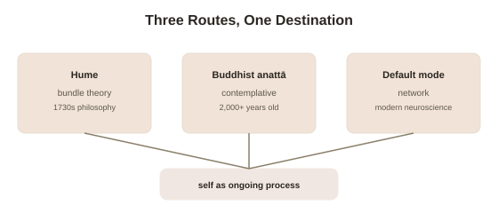

Chapter 5: Is the Self an Illusion, or Just a Process?
Four chapters have built up a striking, consistent case that the self is constructed rather than simply given: hijacked by synchronized touch, disrupted by dampened interoceptive signal, generated by an identifiable brain network that can be quieted by meditation or psychedelics. It's time to ask the question this evidence keeps pointing toward without quite answering: if the self is a model, is there nothing real underneath it at all, or is "underneath" simply the wrong way to think about what a self actually is?
An old philosophical answer, arrived at independently
Philosopher David Hume, writing in the 1730s, reported something that reads almost like a first-person version of this topic's neuroscience, three centuries early: when he introspected as carefully as he could to find "the self," he reported never once catching anything except a particular perception — a sensation, a thought, an emotion — and never once catching a further, separate thing having those perceptions. His conclusion, now called bundle theory, holds that the self isn't a distinct, persisting entity that has experiences — it's nothing more than a tightly bundled, rapidly succeeding collection of perceptions themselves, which get grouped together by memory and habit into something that feels, from the inside, like a single continuous owner, without there actually being one. This is a strikingly close philosophical anticipation of Chapter 4's default mode network story: a network actively generating the sense of a continuous self, built from bundled, integrated signals, with no separate "self-stuff" required underneath the construction.
Buddhist philosophy reached a similar place, on a different route entirely
The Buddhist doctrine of anattā (Pali/Sanskrit, usually translated "non-self" or "no-self" — the teaching that no fixed, permanent, independent self exists within the ever-changing stream of physical and mental processes a person actually consists of) developed over two thousand years ago, through sustained first-person contemplative investigation rather than Hume's philosophical argument or modern neuroimaging, and arrived at a structurally similar conclusion: what's conventionally called "self" is really an ever-shifting process, made up of changing physical and mental components, mistakenly grasped as a single, fixed, continuous thing. This isn't presented in the Buddhist tradition as a depressing nihilistic claim that "you don't exist" in any meaningful sense — it's presented as a corrective to a specific error (mistaking a process for a fixed thing), with real, practical consequences: much suffering, on this view, comes specifically from clinging to a self-model as though it were permanent and separate, when directly investigating experience reveals something more fluid.

A useful distinction that keeps this from collapsing into "you don't exist"
Philosopher Shaun Gallagher's distinction between the minimal self (the basic, moment-to-moment sense of being the one having an experience right now — a first-person perspective, present even in very simple, immediate awareness) and the narrative self (the extended, autobiographical sense of being a continuous person with a past and a future, built from memory and self-story over time — roughly Chapter 4's default mode network's territory) is genuinely useful here, because it clarifies exactly what the evidence in this topic does and doesn't undermine. The rubber hand illusion, depersonalization, and default mode network research mostly target the narrative, extended self — the constructed, story-based sense of being a continuous person across time, which this topic has shown repeatedly to be negotiable, disruptable, and built from integrated signals rather than given as a fixed fact. None of it obviously eliminates the minimal self — the basic fact that experience is currently happening from a particular point of view, right now, which even Hume's bundle of perceptions and the Buddhist stream of changing processes still require a location for. What gets undermined by four chapters of evidence isn't that experience is happening — it's the further, additional claim that a fixed, separate, continuous owner exists behind that experience, doing the experiencing from some further-back vantage point.
Where this leaves the whole topic
Bringing five chapters to a close: the self that turns out to be constructed, negotiable, and disruptable is specifically the narrative self — the ongoing story, built and maintained by identifiable neural machinery, of being a continuous "you" persisting through time. That this self is a process rather than a fixed thing doesn't make it fake or unimportant — a process can be entirely real, genuinely functional, and worth taking seriously, while still not being the kind of eternal, separate substance it can feel like from the inside. Philosophy, contemplative practice, and neuroscience converging independently on roughly this same picture, from three completely different methods and starting points across three continents and multiple centuries, is itself a form of evidence worth weighing seriously — not proof in the airtight sense, but a striking, hard-to-dismiss convergence for a question that touches the most personal, seemingly self-evident fact anyone has: that they are, in fact, a self at all.
Try this
Ideas for noticing or testing this in your own life.
- Try Hume's introspective exercise directly: for one minute, try to catch "yourself" as something separate from whatever you're currently thinking, sensing, or feeling — notice what you actually find.
- Practice the minimal-versus-narrative distinction on a stressful thought: next time you're caught in an anxious story about your past or future (narrative self), try shifting attention to pure, immediate present-moment sensation (minimal self) and notice whether the distress changes.
Worth pulling on?
A few loose threads from this chapter — if any of these genuinely grab you, that's a good sign of where to go next.
- Everything in this topic connects directly to a parallel philosophical debate about consciousness generally, not just the self specifically. → Already in the library: Philosophy of Mind covers the hard problem this topic's neuroscience runs directly into.
- Sustained contemplative practice is the most direct, first-person way to investigate exactly the narrative-versus-minimal-self distinction this chapter describes. → Already in the library: Meditation & Contemplative Practice covers what sustained practice actually involves and finds.